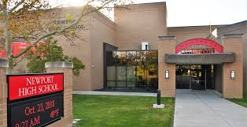

My education
The things I learned, and will try to learn
I went to Newport Highschool, it was a fairly simple school, but they did teach me what I needed. During Highschool, I took biomedical classes as part of PLTW. My greatest achievement is graduating 3rd of my class.
I currently go to Northern Kentucky University, where I orginally wanted to do astronomy, but I quickly changed to the college of informatics. My current major computer information technology.
Even if my track for my major doesn't specilize in web development, I still want to further this skill. That along with how computers work, and how to protect my work.
Those who have graduated already knows that school is not the only place you can learn. Once I get a job I want to keep learning there to. After all jobs are where you pick up the more specilized bits of knowledge compared to school.
